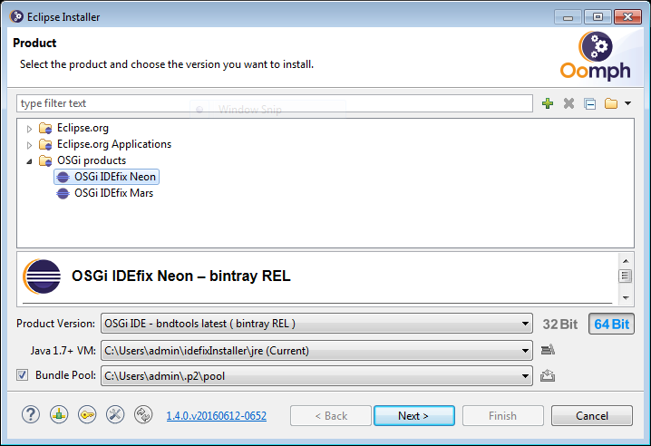
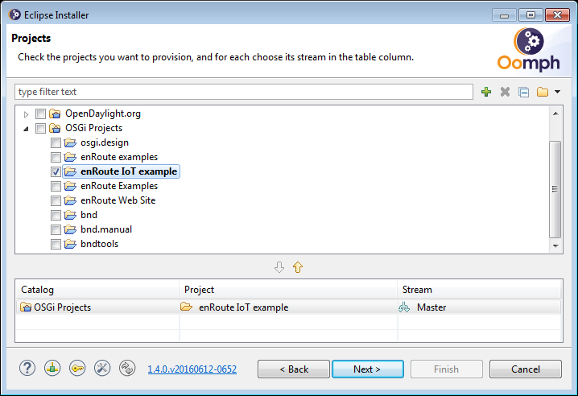

This pages supplements the presentation Jumpstart IoT in Java with OSGi enRoute at Java Forum Stuttgart 2016
It contains product and project configurations for Eclipse Oomph Installer.
If you have questions you can use the Gitter Chat room
open a terminal/shell create a installation directory <instDir> e.g. mkdir ~/<instDir>
OSGi products [required only after initial installation]OSGi products the product you want to install OSGi IDEfix Neon and press Next

OSGi projects [required only after initial installation]OSGi projects and check the projects you want to work enRoute IoT example on and press Next

Next
Finish<githubProject-branchname>\eclipseInstaller\eclipse.exe<githubProject-branchname>\Eclipse.app<installDir>\eclipseInstaller\eclipse.exe<installDir>\Eclipse Installer.appthe installation creates (additionally to the <installDir> folder) following directories (~ means %USERPROFILE% on windows)
~/.eclipse/org.eclipse.oomph.* containing the oomph preferences and user-specified variables~/.p2 containing the shared bundle pool for all oomph installations